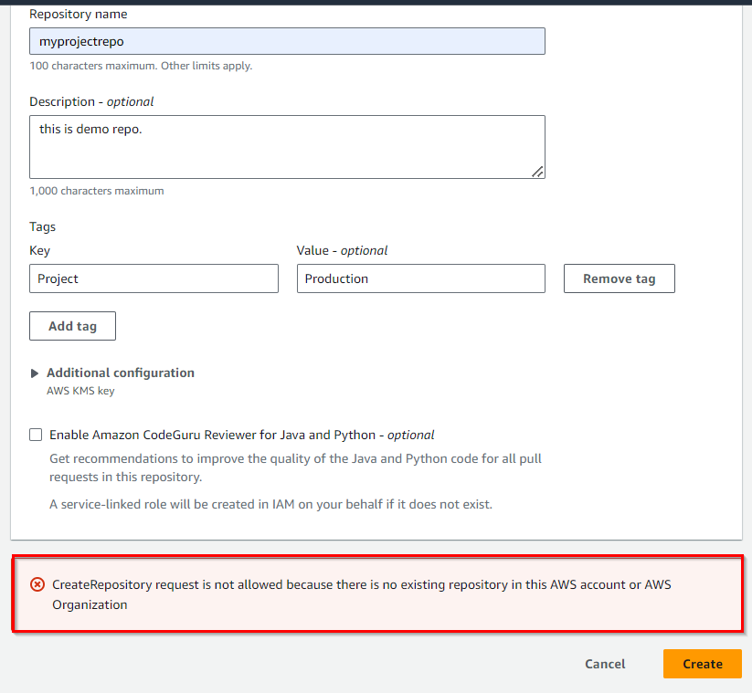
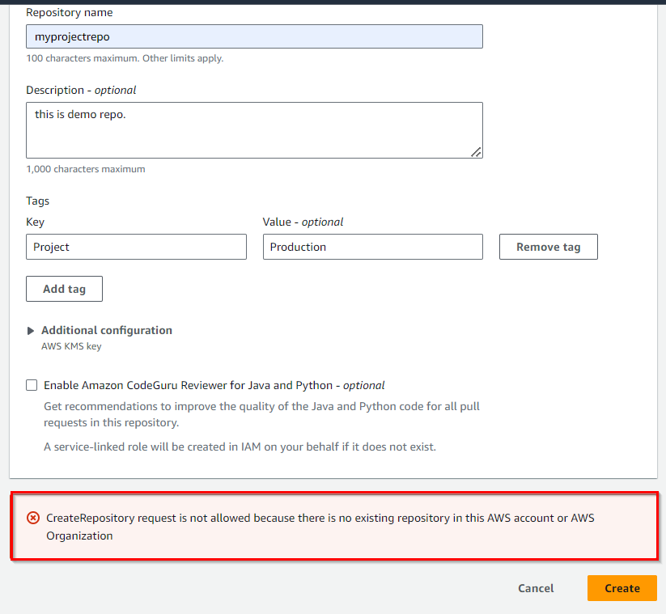

Create a CodeCommit Repository
Welcome to Chapter 18C of our "Mastering AWS DevOps" series! In this blog, we will guide you through the process of creating an AWS CodeCommit repository. AWS CodeCommit offers a fully managed, secure and scalable Git-based repository hosting service that integrates seamlessly with other AWS services. Whether you are working on small projects or managing complex, large-scale applications, CodeCommit provides a robust solution for code storage and collaboration.
What is CodeCommit:
AWS CodeCommit is a version control service hosted by Amazon web services that you can use to privately store and manage assets (such as documents, source code and binary files) in the cloud. CodeCommit is similar to other Git-based version control services like GitHub, GitLab or Bitbucket but it is hosted within the AWS cloud ecosystem.
Here are the key features of AWS CodeCommit:
- Collaboration and fully managed: CodeCommit supports pull requests, branching, and merging, making it easy for teams to collaborate on code. AWS takes care of infrastructure management, including scaling, patching and maintaining the availability of repositories.
- Secure: CodeCommit uses AWS Identity and Access Management (IAM) for authentication and permissions, ensuring tight control over who can access or modify repositories. All data is encrypted in transit and at rest using AWS Key Management Service (KMS).
- Integration with AWS Service: It integrates with other AWS Services like AWS CodePipeline, AWS Lambda, AWS CloudWatch and others enabling automated CI/CD pipelines, monitoring and more.
- Scalable: CodeCommit repositories can scale up to meet your development needs. The service can handle repositories with large numbers of files or branches, large file sizes and lengthy revision histories.
- Storage: CodeCommit has no limit on the size of your repositories or on the file types you can store.
How to create an AWS CodeCommit repository?
Creating a CodeCommit repository is simple and can be done in just a few steps using the AWS management console. Let's create a repository step by step.
- Access the CodeCommit console: Search CodeCommit in the AWS management console search bar, you will find it in the developer tools.
- Select your AWS region: In the region selector at the top right, choose the AWS region where you want to set up your repository.
- Create a repository: In the CodeCommit dashboard, you will get an alert which says “AWS CodeCommit is no longer available to new customers. Existing customers of AWS codecommit can continue to use the service as normal”. Recently AWS announced that AWS CodeCommit is no longer available for new customers, only existing customers can use it. Please check the link for more information. https://aws.amazon.com/blogs/devops/how-to-migrate-your-aws-codecommit-repository-to-another-git-provider/
- Repository Name: On the create repository page, you will find the first field repository name. Enter a unique name for your repository.
- Add a Description (optional): If needed, you can describe your repository in the “Description” field. This description helps users understand the repository`s purpose.
- Assign repository Tags (optional): To improve organization and resource management, consider adding repository tags. These tags serve as attributes, facilitating easier tracking and categorization of AWS resources.
- Additional Configuration: Choose whether to use the default AWS-managed key or your customer-managed key for encryption.
- Enable Amazon CodeGuru for Java and Python (optional): If your repository contains Java or Python code, you can enable Amazon CodeGuru reviewer for automated code reviews.
- Create the repository: To finalise the repository creation, click on the create button. Your CodeCommit repository is now ready for code management and collaboration.


Now. Click on the Create Repository button.


 

For new users: When you click on the “Create” button, you will get a notification that the new user is not allowed to create the repository.
Conclusion
Creating and managing a repository in AWS CodeCommit is a straightforward process that offers powerful advantages for developers, especially those already using AWS service. Whether you are working on a small project or managing a large-scale application, AWS CodeCommit provides the tools and integrations necessary to streamline your development workflow.
Start leveraging the benefits of AWS CodeCommit today and take your source control management to the next level.